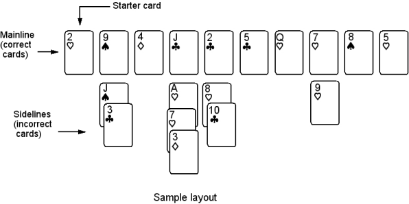

by John Golden
|
Eleusis Express is a card game of inductive reasoning. It is a modification of Robert Abbott’s game Eleusis. The idea: One player has a secret rule for which cards can be played. A very easy example: each card has to be a different color from the card before it. Other players lay down cards they think fit the pattern. If a player lays down a card that works, he can try to guess the rule. Number of players: Eleusis Express is for three to eight players. Probably best with four or five. The stock: Shuffle together two decks to form the stock. If the stock runs out, you can (a) shuffle in another deck or (b) declare the round is over at that point. Object: A game consists of one or more rounds (hands of play). A different player is chosen as dealer of each new round, and it is the dealer who chooses the secret rule. The dealer does not play a hand that round. His score is based on the scores of the other players. All plays are made to a central layout that grows as the round progresses. An example is shown below. A layout consists of a horizontal mainline of correct cards, those that follow the secret rule. Below the mainline are vertical sidelines of mistake cards, those that did not follow the rule. These sideline cards can be overlapped to save space. |

|
Set up: The dealer writes down his secret rule, then deals twelve cards to each player. He turns over the top card and puts it on the table. This will be the start of the mainline. Before play starts, the dealer may give a hint about his rule. The player to the left of the dealer goes first, then the play continues around to the left. Play: In his turn, a player puts one card on the table. The dealer says whether it’s correct or not. If correct, it goes to the right of the last card on the mainline. If incorrect, it goes below the last card (it either starts a sideline or it adds to a sideline). The player who makes an incorrect play must draw one card from the deck. Thus his hand remains the same size. The player making a correct play does not draw a card, so his hand is reduced by one. Declaring No Play: A player has the option of declaring that he has no correct card to play. He shows his hand (to everyone) and the dealer says whether the player is right or not. If the player is wrong—he could have played—the dealer chooses one correct card from his hand and puts it on the layout to the right of the last mainline card. The player keeps his hand and he must draw one card from the stock. If the player is right—he really could not have played—and his hand is down to one card, that card is put in the stock and the round is over. If he has more than one card, the dealer counts his cards and puts them on the bottom of the stock. He then deals the player a new hand, but with one less card. Guessing the rule: Whenever a player makes a correct play, or makes a correct declaration of no-play, he is given the right to guess the rule. Everyone must hear his guess. The dealer then says whether the player is right or wrong. If he is wrong, the game continues. If he is right, the round ends. Scoring: If a player correctly guesses the rule, or if one player gets rid of all his cards, the hand comes to an end. The scores are now recorded. A player scores 12 points, minus 1 point for each card left in his hand. If a player correctly guessed the rule, he is given a 6-point bonus. If a player got rid of all his cards, he is given a 3-point bonus. The dealer scores the same as the highest-scoring player in the round. However . . . if you’re not playing in the Eleusis Express National Finals, you probably should not worry too much about scoring. It is more important to put together an enjoyable game, one where players are able to discover the rules. For example, if it’s halfway through a hand and the dealer realizes that no one can figure out his rule, he could start giving out hints. That might technically be considered cheating and it would increase the dealers score, but it is okay. It will make the game much more enjoyable. And the players shouldn’t worry about discussing the rule with each other, even if they are supposed to be competing. Ending the game: The game should last until everyone has had a chance to be dealer. Usually there’s not enough time for that, so if time runs out, that is where the game ends. Then, add up the scores for the hands and declare the winner. Samples of easy secret rules:
Samples of hard secret rules:
See also Eleusis and Eleusis Express |